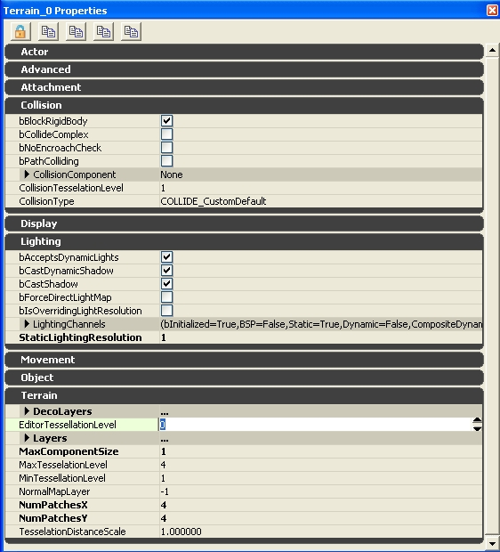

UDN
Search public documentation:
UsingTerrainJP
English Translation
中国翻译
한국어
Interested in the Unreal Engine?
Visit the Unreal Technology site.
Looking for jobs and company info?
Check out the Epic games site.
Questions about support via UDN?
Contact the UDN Staff
中国翻译
한국어
Interested in the Unreal Engine?
Visit the Unreal Technology site.
Looking for jobs and company info?
Check out the Epic games site.
Questions about support via UDN?
Contact the UDN Staff
Terrain(テレイン) の使用
ドキュメントの概要: テレインの設定の概要。 ドキュメントの変更ログ: Scott Sherman により作成。テレインの概観
テレインは、メッシュ増加距離のメッシュからディテールが削除されたシステムに変更されました。これにより頂点が存在する場合に、デザイナーによるディテールのコントロールが可能になりました。テレイン プロパティ

Terrain
NumPatchesX と NumPatchesY
テレインの一行内にある、モザイク式でないクワッドの数は NumPatchesX により決定し、一列内にあるテッセレートでないクワッドの数はNumPatchesYにより決定します｡ アーティストにとっては、モデルのスプライン パッチがこれに似ています｡細分化されたケージの内で一番低いもののパッチの数がこれに当たります｡ これらの寸法を小さくすると、パッチに使われなくなったハイト マップ/アルファ マップのデータは破壊されることに注意してください｡寸法を大きくすると、新しいハイト マップ/アルファ マップには単にゼロが記入されます｡ テレイン全体のサイズは、以下の式で決定されます。: SizeX = NumPatchesX * DrawScale * DrawScale3D.X SizeY = NumPatchesY * DrawScale * DrawScale3D.YMaxTesselationLevel
これは、テッセレートされたパッチのひとつの行/列内にあるクワッドの最大数です｡２の倍数である必要があり、1 <= MaxTesselationLevel<= 16 です。 NumPatchesX と NumPatchesY に使用されている値は MaxTesselationLevel の倍数で無ければならないことに注意してください。 例として、以下のショットは、3 つのあり得るモザイク化レベルのそれぞれで、4 つの NumPatchesX、4 つの NumPatchesY、4 つの MaxTesselationLevel を持ったテレインを表しています。いちばん左のショットは、パッチの 4x4 グリッドを持つフル ディテールです。真ん中のショットは、細分化したパッチの 2x2 グリッドを持つハーフを表しています。いちばん右のショットは最も低いレベルで、オリジナルのエリアを 1 つのクワッドでカバーしています。
MinTessellationLevel
これは、ディテールをテッセレートするのに細分化する 「サブクワッド」 (列とコラム) の最小数です。値が MaxTesselationLevel と同等な場合、テレインはディテールをまったくテッセレートしないことに注意してください。MaxComponentSize
エンジンでは、テレインはレンダリングのためのテレイン コンポネントと呼ばれるパッチの矩形のグループに分割されます。 MaxComponentSizeは、テレイン コンポネントのひとつの行/列に位置する完全な非テッセレートされたクワッドの最大数です。 (テレインコンポーネントの単一の行/列にある完全なテッセレーションディティールでの物理パッチの最大数は、単にこの数にMaxTesselationLevelを掛けたものです) 基本的に、すべてのコンポネントは MaxComponentSize のパッチの正方形ですが、パッチの解像度が MaxComponentSize の倍数でないテレインでは、端の方に小さめのコンポネントが配置されます｡ これは、完全にテッセレートされたコンポネントの頂点バッファが > 65536 の頂点になるのを防ぐために MaxTesselationLevel によって制限されています。 MaxTesselationLevel が 16 の場合、MaxComponentSize は <= 14 に限られています。MaxTesselationLevel が 8 の場合、MaxComponentSize は <= 30 に限られています。
各テレイン コンポネントは、それぞれ異なる DrawMesh 呼び出しです。パフォーマンスの結果は、割り当てられているマテリアルの複合度により様々です｡複合度は、テレインのパッチに割り当てられたレイヤーと、レンダリングされたテッセレートレベルによって決まります｡ ひとつのテレイン コンポネントに特定のレイヤーが割り当てられた場合、これは他のコンポネントには作用しません｡レイヤーが周囲のコンポネントに「こぼれて」いても、これはなかなか見えにくいことに注意してください｡テレイン ブラウザまたはプロパティ ウィンドウによって露出したハイライト オーバーレイを使用すると、検出しやすくなるでしょう｡ MaxComponentSizeをビューする: テレインのコンポーネントのサイズを見るには、[フラグを表示]（Show Flags）メニューにある [テレイン パッチ] の、ビューポート上のフラグを確認します｡これが有効の場合、テレインの各コンポネントの周りに黄色いボックスがレンダリングされます。 MaxComponentSize とは、テレインのひとつの UTerrainComponent に含まれるパッチの数です。この数が多いほど、テレインの「サブ ピース」の数は少なくなります｡ コンポネントの数は、以下によって決定します: NumSectionsX = ((NumPatchesX / MaxTesselationLevel) + MaxComponentSize - 1) / MaxComponentSize NumSectionsY = ((NumPatchesY / MaxTesselationLevel) + MaxComponentSize - 1) / MaxComponentSize